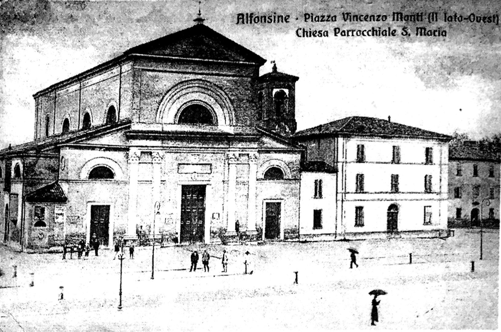

Un numero “speciale” dei Quaderni che vuole celebrare i Cinquecento anni della Comunità delle Alfonsine. Cinque secoli fa (1502) la posa della prima pietra per la costruzione di una Chiesa in località Destra Senio. Gli storici hanno identificato questo momento con la nascita ufficiale della nostra città. Documenti rari, preziosi per la loro autenticità, di avvenimenti storici (Francesi in Romagna) e di testimonianze, sofferte e qualificate, come il Diario di guerra di don Liverani. Esperienze e testimonianze che fissano le immagini di un viaggio attraverso il tempo e ricordano vicende umane per dare una identità socioculturale alla nostra comunità. Una Chiesa che rappresentò il coagulo di un territorio abitato che stava sviluppandosi lungo il fiume Senio fra le acque malsane delle Valli, in situazioni ambientali difficili, condizionate da miseria ed epidemie devastanti. L’Amministrazione Comunale è profondamente riconoscente al Prof. Adis Pasi ed ai suoi collaboratori per l’impegno profuso nella ricerca e per aver sapientemente definito i confini fra la documentazione storica e i “si dice”. Un lavoro serio e qualificato che ci offre la chiave di lettura delle nostre origini, radicate nelle fondamenta di quella Chiesa. Per capire meglio le tappe del nostro viaggio. Per definire meglio le immagini della nostra identità.
Angelo Antonellini Assessore alla Cultura
La quasi totalità dei documenti riportati in questo numero dei «Quaderni Alfonsinesi» proviene dall’Archivio della Chiesa Arcipretale di S. Maria delle Grazie. Si rivolgono pertanto i più vivi ringraziamenti a don Mario Piazza e a padre Renato Frappi per la loro disponibilità. Particolare gratitudine a due giovani appassionati di storia che ci piace citare affettuosamente solo per nome: don Michele, diacono, e don Tiziano, che ci sono stati prodighi di indicazioni preziose e con i quali abbiamo avuto proficui scambi di idee. Rivolgiamo, infine, un caloroso e riconoscente saluto a don Mario, parroco della Chiesa di S. Maria per ventidue anni, la cui presenza discreta, ma ininterrotta e partecipe al nostro fianco in ogni momento della nostra vita, è sempre stata testimonianza di carità e di fedeltà alla “pietas”. Augurandogli di poter continuare con altrettanta efficacia la sua missione pastorale, facciamo nostre le nobili e sofferte parole che una signora gli ha rivolto alla fine della S. Messa di domenica 30 giugno: “Grazie per essere sempre stato al posto giusto nel momento giusto”.
(sistema iniziando da 55)
D. Sgubbi, Diocesi e cultura cattolica nella storia di Faenza, Faenza, Litografica, 1991, p. XXXIII.
Da Un paese, la sua chiesa, Alfonsine, 2000, p. 4, parzialmente modificato). A cura di Romano Pasi
Celio Calcagnini, circa 1540 (v. A. Paesi, Celio Calcagnini (1479–1541), «Quaderni Alfonsinesi», n. 2 (Feb. 1979).
“… ed il predetto Alfonso Conte di Lui (Teofilo) Figlio, continuando l’impresa Paterna aveva ridotta massima parte parte d’esse valli escluse le acque con sua industria, e dispendio di scudi diecimille circa coltivabile e fertile, ed edificata una Chiesa in tali Fondi ad onore della gloriosa Vergine Madre di Dio, e formate più Case per abitazione degl’Agricoltori in tali possedimenti chiamando tali Luoghi dal suo nome Alfonsina…”. (Dal Breve di Leone X del 4 dicembre 1519).
“Si dié poscia a non poche edificazioni di case, riempiendo d’abitatori i luoghi vuoti, ed ultimamente eresse una chiesuola a Nostra Donna onde fosse costituita parrocchia a spirituale vantaggio de’ nativi assai a que’ giorni da altre chiese lontani”. “… e all’avvenire volle le terre per lui siffattamente migliorate dal Suo nome si chiamassero ALFONSINE, col quale nome tosto nella topografia della provincia ferrarese si collocavano”. (G. Rambelli, Memorie storiche dell’Alfonsina, Galeati, Imola, 1833)
Alfonso Calcagnini "proseguendo l’opera del padre aveva fatto con ingenti spese e con industria, grandi bonificazioni delle valli donate nel 1465 (in effetti 1464, n. d. r.) alla famiglia. Vi aveva edificato molte case, e nel 1502 anche anche la chiesa dedicata alla Vergine in luogo, ove non vi era popolazione, cosicché dal suo nome, avendo a que’ luoghi colla sua industria recato molto vantaggio, si chiamavano le Terre Alfonsine. (Tavola genealogica N. 1 della Famiglia Calcagnini stampata nel 1848).
“Per comodo delle persone che lavoravano in gran numero a questo prosciugamento, i Signori Calcagnini, poiché si vedevano ormai padroni di un estesissimo territorio che prima era tutto coperto dalle acque, vollero edificarvi una Chiesa la quale fu detta Santa Maria delle Alfonsine” (G. Fignagnani, La Storia di Fusignano, Prato, 1879)
“Dal 1502 le bonifiche delle Alfonsine erano già avanzate a modo, che i coltivatori avevano preso ad abitar la’ stabilmente, e Alfonso a provvedere anche ai loro bisogni religiosi, edificò sul luogo la prima chiesa, che S. Maria delle Alfonsine fu detta; e bastò per una quarantina d’anni. Ma continuando sempre i Calcagnini nel grande lavoro, nulla ostante che giorni men lieti anche per loro sorgessero, poi e di Alfonsine aumentando la popolazione, anche la chiesa nel 1540, come a suo luogo diremo, fu d’uopo ricostruire”. (L. Balduzzi, I Calcagnini, memorie genealogiche, Pisa, 1884).
“Alfonso Calcagnini, il quale aveva un feudo a Fusignano protrasse… l’interramento di val Nagajoni e di altre valli limitrofe, che assorbi gran parte delle sue forze finanziarie, ma anche fruttò alla sua famiglia l’acquisizione di un grande tenimento coltivanile. In questa zona prosciugata, che da lui si chiamò ”Alfonsine“, egli mandò numerose famiglie di Fusignano e l’anno 1502 vi fu innalzata una chiesa presso la quale sul fiume Senio (in punto in cui si trovava un passo barca) si creò villaggetto. Quello che era è diventato Alfonsine”. (G. Gambi, L’insediamento umano nella regione della Bonifica Romagnola, CNR, 1949).
"Nel 1540 poi i Conti Alfonso e Teofilo Calcagnini investiti del giuspatronato di essa chiesa, secondo il Breve di Leone… innalzarono dalle fondamenta una chiesa meno augusta sulla quale posero in marmo la seguente epigrafe:
ALPHONSUS ET THEOPHILUS CAL CAGNINI FRATRES COMITES ET DOMINI TERRITORII LEONINI TEMPLUM B VIRGINIS DE JURE PATRONATUS SUAE FAMJLIAE A FUNDAMENTIS EREXERUNT ANNO MDXL (1)
Dal Breve di Leone X: “… ed accordando a Borso, e Tommaso, e figli discendenti da esso Tommaso il gius patronato, e facoltà di presentare all’Ordinario del Luogo i Rettori, e Cappellani alle vacanze, e ciò perpetuamente senza che possa venire apposto vizio di surrezione, o regime, nullità o invalidità benché impensata ne essere le presenti impugnabili in verun modo o diretto, o indiretto, ma che le presenti Lettere debbano sortire effetto di valido contratto fra noi, e i nostri successori..” La definizione di giuspatronato è la seguente: “Ius hononficum, onerosum, et utile alicui competens in ecclesia pro eo, quod de Diocesani consensu ecclesiam fundavit, construxit vel donavit ipse, vel is, a quo causam habuit, solus vel alio concorrente”. (Diritto onorifico, oneroso e utile spettante a qualcuno su una chiesa per il fatto che, dietro consenso dell’Ordinario diocesano, ha fondato, costruito o donato una chiesa egli stesso, o colui dal quale ebbe pieno diritto da solo o insieme con un altro). “Oltre alla scelta del rettore, ai patroni . .. spettavano altri diritti: quello più onorifico di uno stallo riservato ed in rilievo nella chiesa del proprio patronato, quello più oneroso della conservazione e manutenzione decorosa della fabbrica e dei beni patrimoniali del beneficio, quello più utile dell’esazione annua in caso di indigenza. Anche se difficilmente valutabile in termini economici, non va trascurata la rilevanza sociale dello ius onorifico: tanto in un paesino di campagna, quanto in un popoloso quartiere di una ricca città il godere di un luogo separato in chiesa era il segno visibile ed appariscente di un prestigio frutto di una remota origine, o di una sicura consistente ricchezza patrimoniale” (2). Oltre al giuspatronato perpetuo sulla chiesa, Leone X conferì a Borso e a Tommaso la baronia del Leonino. Il 15 luglio 1605, Paolo V eresse Fusignano in marchesato e confermò a Guido, figlio di Teofilo II e di Ginevra Rondinelli, tutti i privilegi ed esenzioni concessi da Clemente VII, quando, nel 1598, Ferrara era tornata sotto il dominio diretto della Chiesa. È appena il caso di ricordare che in quell’occasione i Calcagnini furono privati del mero e misto imperio di cui avevano goduto fino a quel momento. Da Alfonso II, figlio di Tommaso e di Maria dì Noyant, nacquero Ercole e Tommaso IL Nelle divisioni di famiglia a Tommaso andò il marchesato di Cavriago. Fu suo nipote Mario ad ottenere il marchesato di Formigine in cambio di Cavriago (3 ottobre 1648). Si ricordi che Mario Calcagnini, nel 1634, aveva venduto al cugino Borsa la parte che gli spettava in Fusignano e che il contratto fu convalidato nel 1679. Il ramo fusignanese si estinse nel 1814. I suoi ultimi rappresentanti meriterebbero uno studio approfondito. Francesco morì senza eredi maschi; il fratello Tommaso, morto a Parma nel 1814, appoggiò i progetti di riforma di Guillaume du Tillot, ministro delle finanze di Filippo di Borbone, nel ducato di Parma. Ila fallimento di quei progetti spinse anche Tommaso Calcagnini a ritirarsi della vita politica. L’altro fratello, Guido (1725–1808), fu nominato prima cardinale nel 1775, poi, l’anno seguente, Vescovo di Osimo e Cingoli da Pio VI (Braschi). Un dotto amico, docente universitario, mi ha segnalato sue interessanti prese di posizione sui governi napoleonici in Italia. E’ sepolto nella cattedrale di Osimo. Del ramo di Formigine fu illustre rappresentante Carlo Leopoldo (1678–1746), creato cardinale nel 1743 da Benedetto XIV (Lambertini) col titolo di S. Maria in Aracoeli, di cui è rimasta fama di uomo integerrimo e fine giureconsulto. E’ sepolto a Roma in S. Andrea delle Fratte. Fratello del Cardinale Carlo Leopoldo fu Ercole, morto nel 1738, padre di Teofilo. Teofilò sposò Laura d’Adda dalla quale ebbe quattro figlie e un figlio. Come risulta dai registri della Parrocchia di S. Domenico in Bologna, mori in quella città (repentine obiit) il 3 aprile 1797. Teofilo aveva le proprietà l’eredità di Francesco, del ramo fusignanese, e queste passarono all’unico figlio maschio, Ercole (1756–1817). È Ercole, infatti, che il 29 aprile del 1809 presenta la denuncia dei beni posseduti in Alfonsine assieme alla documentazione che lo dimostra unico erede del padre. Una delle sorelle di Ercole, Maria (1754–1846), andata sposa al marchese Carlo Zavaglia di Ferrara, fu colta e stimata amica di Giuseppe Compagnoni, che la fece destinataria di molte lettere, alcune delle quali sono state pubblicate in anni recenti (3). Nel corso dell’Ottocento i Calcagnini avevano abbandonato la cura e la manutenzione della chiesa e avevano perfino ceduto in alienazione perpetua il “gius sedendi” a Giuseppe Lanconelli. In pieno clima di polemiche intorno all’erezione del palazzo comunale veniva usato, non so quanto strumentalmente, anche lo stato della chiesa che “è piccola, cadente, ed anche indecente, per la quale e ormai tempo che i fedeli invece d’impiegare somme in opere di lusso, cerchino di erigere un Tempio al nostro Dio …” (4). È pur vero che i Calcagnini dichiararono la loro disponibilità a partecipare alle spese per i restauri, ma non sappiamo se da essi sia venuto un contributo per la costruzione, iniziata nel 1868, del nuovo edificio sacro (5). In proposito don Luigi Ruffini ci offre una informazione preziosa. La chiesa fu, in un primo momento, “ terminata solo all’esterno, grezza all’interno. Poi per mancanza di fondi, sosta ancora di economia finché il Governo ordinò la chiusura della vecchia chiesa, perché minacciante disgrazia. Fu allora necessario fare un secondo appalto, … di abbattere la chiesa vecchia, fare la sacrestia …”. I lunghi periodi di economato, rilevabili nella cronotassi dei rettori, sono giustificati dalla necessità di reperire risorse per il prosieguo dei lavori nella nuova fabbrica, cui il comune contribuì con duemila lire annue. Rimase comunque ai Calcagnini il diritto di nomina dei rettori. Mons. Mariano Faccani, cancelliere vescovile, scrive: “Dalle carte di archivio si evince molto bene che la crisi dei Calcagnini aveva portato al completo abbandono del dovere di mantenere il culto nella parrocchia di Alfonsine, così il Vescovo Vincenzo Bacchi in pratica decretò nel 1922 la fine del Patronato, con il ”monitum“ cioè una citazione in forma edittale” (6). Il “Monitum”, emanato il 4 luglio 1922 e dal quale traduco, come posso, alcuni passi, suona così: “Essendo vacante la Chiesa rettorale di S. Maria delle Alfonsine di questa diocesi innanzi a Noi il giorno 28 scorso comparve il Conte Carlo Gentili fiorentino nella sua qualità di Procuratore dell’Eccellentissimo Sig. Marchese Guido Calcagnini come risultò dal mandato di procura rogato il 28 scorso, e asserente che, sulla base della legge di fondazione e dotazione di detta Chiesa rettorale” nonché per le ininterrotte nomine “spettava e apparteneva al medesimo signor Marchese Guido Calcagnini il diritto di eleggere, proporre e presentare il Rettore per essa (chiesa) ogni qualvolta si presentasse una situazione di vacanza”, perciò ha scelto, proposto e presentato alla carica di Rettore il Reverendissimo Don Francesco Gardini, sacerdote della Diocesi di Bologna, essendo stato chiamato l’ultimo rettore, Don Luigi Tellarini, a reggere la Chiesa Parrocchiale di S. Severo di Faenza. Ila Vescovo ammette che il Gardini venga nominato nuovo Rettore, ma a tempo e luogo debiti (suis loco et tempore), perché nel frattempo intende procedere in forma edittale per dare modo a tutti coloro che avessero diritti da accampare sul rettorato della chiesa alfonsinese di poterlo fare; per questo concedeva nove giorni di tempo. Il Vescovo avrebbe vagliato la legittimità (causam rationabilem) di altri eventuali titoli. In buona sostanza il Vescovo faceva intendere che, pur rispettando lo “ius eligendi” dei Calcagnini, riservava a se stesso il diritto di prendere in considerazione altre candidature e quindi di scegliere chi più ritenesse adatto all’incarico. E poco importa che poi nominasse rettore mons. Francesco Gardini. Si dovrebbe verificare presso l’Archivio Vescovile se e quando ci fu una rinuncia formale del giuspatronato da parte dei Calcagnini. Sta di fatto che il 6 aprile 1932 il cancelliere vescovile comunica a don Luigi Liverani la nomina a Rettore della chiesa arcipretale di Alfonsine e che il 26 aprile Mons. Antonio Scarante gli conferisce il titolo di Arciprete. Fu probabilmente con questa elevazione della chiesa rettorale a chiesa arcipretale che si superò per sempre il giuspatronato e che si confermò sull’argomento, un comportamento uniforme tra Mons. Bacchi e Mons. Scarante.
Ristabilimento del Vicariato Foraneo. Lettera di Mons. Vincenzo Bacchi, vescovo di Faenza, a Mons. Francesco Gardini rettore di S. Maria delle Grazie.
Mons. Rev. Mo Le accoglienze affettuosamente festose che Ella ha ricevuto costi, e gl’inizi felici del suo ministero, dei quali ci è pervenuta notizia, hanno persuaso Noi a ristabilire* codesto territorio di Alfonsine in Vicariato foraneo. Alla Nostra persuasione e poi al Nostro desiderio è venuto incontro con spontaneità cordiale il Rev.mo Mons. Albertini Arciprete di Fusignano, pregandoci di separare Alfonsine da quel Vicariato. Perciò, con questa Nostra lettera, siamo lieti di nominare Lei in Nostro Vicario foraneo pel territorio di Alfonsine, che togliamo dalla giurisdizione vicariale di Fusignano; e ciò conferendo a Lei, insieme con la nomina, tutte le facoltà necessarie ed opportune. Nutriamo piena fiducia che il Signore prosperi l’opera di Lei in codesta plaga della diocesi remota dalla residenza Nostra; e augurandoLe da Dio ogni bene, Ci proferiamo.
Suo aff.mo + Vincenzo vescovo
Faenza 27 settembre 1922
Il Rambelli, parlando di don Damiano Battaglia, lo indica come Rettore e Vicario Foraneo. Non sappiamo quando la Chiesa di Alfonsine fu privata del Vicariato e annessa a quello di Fusignano. È presumibile che tale trasferimento sia avvenuto nel periodo compreso fra il 1854 e il 1881 quando, cioè, la parrocchia fu retta successivamente da ben sette economi. (Si vedano la cronotassi dei Rettori e le Memorie storiche dell’Alfonsine di G. Rambelli, Imola, 1833, p. 44). Stralcio della lettera inviata il 6 aprile 1932 dal Cancelliere vescovile, Can. Antonio Gandini, a Don Luigi Liverani, “Rettore eletto di S. Maria delle Alfonsine”.
Molto rev.do Signore, ò il piacere di comunicare alla S. V. molto rev.da che con Bolla Pontificia in data I marzo 1932, Ella è stata nominata Rettore della Chiesa Arcipretale di S. Maria in Alfonsine in questa Diocesi di Faenza.
Lettera di Mons. Antonio Scarante, vescovo di Faenza, al “Sig. Dott. Don Luigi Liverani Rettore-Arciprete di Alfonsine”
Molto Reverendo Signore, siamo informati che tra giorni seguirà il suo solenne ingresso nella parrocchia delle Alfonsine quale novello Rettore e Nostro Vicario Foraneo. In tale occasione per attestarLe con qualche segno la Nostra stima e benevolenza ed anche per chic, che per estensione e popolazione è tra le più importanti della Nostra Diocesi, abbiamo deliberato di conferirLe, come Le conferiamo con la presente, il titolo onorifico di Arciprete. Nella fiducia che codesta nomina sarà di gradimento a quella buona popolazione, e a Lei di stimolo a compiere coscienziosamente e con zelante attività le mansioni parrocchiali affidateLe, Le auguriamo un ministero fecondo di pastorali consolazioni e paternamente La benediciamo.
+ Antonio Vescovo
Faenza 26 aprile 1932
“ La chiesa eretta da Alfonso e Teofilo Calcagnini consisteva nella sola navata di mezzo della parrocchiale odierna, divenuta anche questa augusta le furono unite le navate laterali, e dal rettore Paolo Guerrini circa il 1752 fu aggiunto il campanile sul quale a pubbliche spese nell’ottobre 1825 si collocarono armoniche e lodate campane fuse dal prof. Rasori bolognese” (G. Rambelli, Memorie storiche cit., p. 48)
La Chiesa di S. Maria di Alfonsine, è di tre Navate, con sei altari.
Scalinata, e Mensa di Pietra con tre gradini superiori di legno verniciati, e rabescati a finto oro con Tabernacolo simile vecchio sua predella, e due Conopei (drappo del colore liturgico del tempo che serve a velare il tabernacolo). Sedici candelieri di Legno a finto oro: sei vasi da fiori simili: quattro Candellieri piccoli di ottone. Tre Tavolette, un Legilio, un Campanello. Un trono per l’opposizione del SS. Sagramento a rabeschi dorati. Due lampade d’ottone appese a due bracci di ferro. Due quadri appesi lateralmente al Presbiterio rappresentanti uno S. Anna, e l’altro S. Giuseppe. Sopra il coro un Nicchio, entro cui havvi l’Imagine di terra della B. V. delle Grazie.
Mensa di pietra con due gradini, e Pradella. Altare di stucco con quindici Misteri del SS. Rosario: Quadro della B.V. del Rosario, S. Domenico, S. Francesco: al di dietro il Nicchio colla statua della B.V. del Rosario vestita con abito di seta scuro. Quattro Candellieri d’ottone e Croce compagne. Sei candellieri di Legno, con Tavolette da Messa, Legilio, e campanello.
Altare di pietra, Mensa di legno, e Pradella. Due Candellieri di ottone, e Croce compagni: due Lampade d’ottone appeso a due bracci di ferro: sei Candelieri di Legno con croce. Tre tavolette, con Legilio, e campanello. La Statua della B.V. Addolorata: la Statua di S. Giovanni Evangelista. Una tendina che copre suddette statue.
Altare di Pietra, e predella con Quadro, che rappresenta le Anime del Purgatorio, Immagini di S. Antonio Abate; S. Agostino; B.V. della Cintura. Quattro candelieri di legno, Croce, e Tavolette da Messa, Legilio, e campanello. Due Lampade d’ottone appese a bracci di ferro.
Altare di Pietra con Pradella. Quadro rappresentante S. Antonio; di dietro Nicchio con la Statua di detto S. vestita di nero con il S. Bambino. Sei candelieri di legno, e tavolette da Messa con Legilio, e campanello. Due candelieri piccoli d’ottone. Due lampade d’ottone appese a bracci di ferro.
Altare di Pietra con sua Pradella, con quadro rappresentante S. Luigi: al di dietro Nicchio colla statua di d.° Santo, vestito di nero con cotta, Crocefisso. Sulli gradini il quadro del Sacro Cuor di Gesù con sua cornice velata ad oro, con quattro candelieri simili, due Reliquiarj, e tre tavolette con Leggilio vernicciato, e croce piccola posta sopra il quadro. Il piedestallo di legno compagno del quadro con due bracci d’ottone. Una lampada d’ottone appesa al braccio di ferro e campanello.
Una Caldara di Rame per conservare l’acqua. Due vasetti d’argento per il S. Crisma, e da Catecumini entro ad una scatola di legno. Due piccole boccette di vetro per i SS. Ogli. Un Cucchiaro d’ottone, e Cattino di terra per battezzare. Canapo di stoffa. Rastello di legno chiuso a chiave.
(Indichiamo solo alcune voci) La Statua del Bambin Gesù. Tre Confaloni bianchi di Damasco guarniti di giallo con le Immagini del SS. Sagramento, del SS. Rosario, e S. Antonio con loro croci ed aste. (Si tratta evidentemente dei Gonfaloni delle Confraternite). Un urna di legno per il S. Sepolcro dipinto a finto marmo.
Alla Chiesa di S. Maria di Alfonsine resta unita la Canonica. Nel piano Inferiore avvi l’Entrata, con quattro Camere, una delle quali serve per la Sagristia. Per mezzo di una scala di pietra a due rami si ascende al secondo piano composto di una sala, e quattro camere per ogni lato. Il piano superiore, a cui si ascende per una scala di legno a due rami, serve per il Granaro. Nel cortile della Canonica vi sono i bassi comodi cioè Stalla, Bugadera, Loggia per la legna, Cantina, Forno, e Pozzo.
La Chiesa Parrocchiale di S. Maria dell’Alfonsine possiede i seguenti stabili e diritti. (Anche in questo caso citiamo due sole voci che ci paiono di particolare interesse).
Una piccola Casa sul Piazzale della Chiesa dalla quale si ricava la pigione di scudi otto. (A margine del foglio è stata scritta la seguente nota: "questa casa venna demolita ad istanza del Comune locale nel 1845, ed in compenso si paga annualmente alla Chiesa dal Comune istesso la somma di scudi dieci).
La Chiesa Par.le di S. Maria gode il diritto di Primazia in Grano, che si deve pagare da tutti quelli, che entro i confini della D.a ne seminano; e si raccolgono circa cento Corbe. Valutato un anno per l’altro a scudi 1:60 la corba, ne risulta l’entrata di scudi centosessanta. Gode inoltre del diritto così detto del Carlino. Questa tassa consiste nel pagamento di baj. Cinque per quelle Famiglie che non pagano Primizia. Potendosi riscuotere ascenderebbe a venti o venticinque scudi all’anno; ma trattandosi di famiglie quasi tutte povere, o miserabili, oggi si riduce a zero.

“… nessuna città è felice, e nessun uomo, se non vivono secondo saggezza ispirata da giustizia, si a che le abbiano in sé come virtù, sia che le abbiano apprese attraverso la giusta educazione ricevuta da uomini retti”. (Platone, Lettera Settima, 335 d)
Un tentativo di introduzione.Non avrei voluto scrivere questa, sia pur breve, premessa per moltissimi motivi. Soprattutto sento la mancanza di una biografia ragionata di don Liverani attraverso la quale comprendere le ragioni per cui assunse le posizioni che assunse. Un serio programma per un’indagine dovrebbe, almeno così pare a me, partire dall’ambiente faentino in cui crebbe, dai maestri che lo guidarono negli anni del seminario, dagli eventuali contatti stabiliti a Roma, dove conseguì il dottorato in Teologia. L’avere ascoltato più volte l’Arcivescovo Baldassarri e mons. Lucchesi, l’avere letto di mons. Lanzoni e di mons. Rossini ha prodotto in me la convinzione che tutti questi personaggi risentissero di un clima culturale in cui si imponeva un’esigenza di grande rigore negli studi che inevitabilmente li spingeva ad analizzare criticamente anche le vicende del loro tempo e a viverle da protagonisti, svolgendo la loro missione sacerdotale (“omnibus ungulis, collatis viribus”) alla luce di una catechesi al passo coi tempi e consapevolmente aperta al futuro. Per questo non mancò la loro attenzione al sociale, che ebbe nel conte Carlo Zucchini (1862–1928) uno dei maggiori protagonisti, alla lotta politica, che portò una coalizione liberal-cattolica, capeggiata dall’avv. Gallo Marcucci, alla conquista del Comune di Faenza. Ma soprattutto intensa fu la loro azione nell’ambito della Gioventù Cattolica Italiana, fondata a Faenza nel 1891.Scriveva mons. Lanzoni: “Io immaginavo e vagheggiavo l’Azione Cattolica come un’accolta, meglio un esercito di ecclesiastici e laici ben organizzati, diffuso in tutte le diocesi d’Italia, nessuna eccettuata, fornito di tutti i mezzi consentiti dalle leggi vigenti e suggeriti dalla cultura e dalla tecnica moderna; provvisto di giornali politici quotidiani da competere con qualunque altro, di riviste religiose, letterarie e scientifiche per le classi colte e fogli e foglietti per il popolo, con propri luoghi di convegno, adunanze di cultura e di propaganda, gite di divertimento e pellegrinaggi di divozione, casse rurali, banche di credito, società economiche di ogni genere e professionali; un esercito scelto di militi pronti a tutto (in estremi mali estremi rimedi), che si proponeva di muovere e infervorare i cattolici, e premere sui pubblici poteri, col massimo lealismo, per ottenere tutte le libertà d’indole religiose che ci competono e che ci erano state tolte”.E parlando ancora dei compiti delle Associazioni Cattoliche precisava: “Ho detto esporre e difendere le dottrina della Chiesa, s’intende integralmente, e senza sottintesi e silenzi calcolati, senza menomazioni, transizioni e compromessi di alcuna sorta, nella speranza (certamente vana) di rendere più accettabili gli insegnamenti della Chiesa agli increduli e pencolanti tra la Fede e il dubbio. Ma ero ben convinto si dovesse distinguere accuratamente negli insegna‑menti della Chiesa ciò che è dogmatico, certo, probabile, controverso da ciò che non è, e non accondiscendere ad esagerazioni e confusioni assai nocive”.Si sente, dietro queste parole, il grande storico delle Diocesi d’Italia, della Controriforma a Faenza e nella diocesi. Quando il campanone dell’orologio di Faenza, nell’ottobre del 1928, “annunciò ai faentini l’arrivo di Mussolini in Roma, io capii troppo bene (e chi non avrebbe dovuto comprenderlo?) che quel suono non salutava l’entrata pura e semplice nella capitale di un nuovo Presidente del Consiglio, sia pure giunto al potere in circostanze inusitate e drammatiche, ma l’inizio di un regime nuovo, tutto diverso dal regime liberale…”. Francesco Lanzoni, (1862–1929), morì 1’8 febbraio, alla vigilia dei cosiddetti Patti Lateranensi e la morte gli risparmiò il dolore dell’assalto fascista alla sua Azione Cattolica.Io immagino don Liverani cresciuto in questo clima e di esso partecipe, perché il suo antifascismo, che emerge con indiscutibile chiarezza dal Diario, nasce da quella consapevolezza che fu di mons. Lanzoni, che, in chiusura delle sue memorie portate a termine nel 1928 e pubblicate nel 1930, VIII E. F., ha il coraggio di scrivere: “Oggi le condizioni d’Italia sono profondamente cambiate, ma le difficoltà per i cattolici militanti, lungi dall’essere scomparse, sono diventate più gravi”. Il testimonio passava ad un’altra generazione di sacerdoti, quella dei “preti nella bufera”. Da dove nasce l’importanza data da don Liverani all’educazione dei ragazzi, al loro inserimento nell’Azione Cattolica, se non da una continuità con il programma tracciato da mons. Lanzoni? Il balilla e l’aspirante, dovevano convivere nello stesso ragazzo, ma l’educazione religiosa non poteva non funzionare da antidoto all’educazione militaresca; le processioni e le parate; i convegni cattolici e le adunate: due mondi a confronto, irriducibili se da una parte sta un prete “fortis in fide”. Se poi a fianco dell’Arciprete sta un cappellano come don Fioravante Zanelli, la partita è vinta, perché i giovani ai moschetti preferiscono il pallone. E quello di don Zanelli era il pallone di Dio.Conosciamo tanti altri diari di guerra scritti da sacerdoti. Per restare vicino a noi, sarà sufficiente ricordare quelli del Priore di S. Alberto, don Giovanni Zalambani (1944–1945. S. Alberto nel turbine della guerra) e dell’Arciprete di Fusignano, don Paolo Rambelli (Memorie storiche 1922–1945). Abbiamo ora il Diario di guerra del nostro Arciprete. Non farò su di esso commenti che lascio ai lettori. Se lo vorranno, sarà cura degli studiosi di storia condurre analisi critiche. Io spero soltanto che tutti provino le emozioni da me vissute mentre andavo decifrando la difficile scrittura.Quando, passata sul nostro paese la bufera che aveva lasciato dietro di sè lutti e rovine, ma che non aveva piegato una “comunità”, perché “durante il fronte” e nell’immediato dopoguerra fummo una comunità spontaneamente coesa, quando, dicevo, si pose il problema della ricostruzione e, dopo un referendum tra i capifamiglia, l’amministrazione comunale decise di spostare il centro del paese dalla destra alla sinistra del Senio, ancora una volta l’Arciprete partecipò e decise che anche la chiesa arcipretale sarebbe stata ricostruita nel nuovo centro. La sua decisione spaccò la comunità cattolica e produsse una serie di incomprensioni che, alla lunga, costrinsero il Vescovo, a decidere, suppongo dolorosamente, la rimozione di don Liverani. Desidero testimoniare ciò che mi riferì il suo successore, don Carlo Marcucci. Il Vescovo, presa la decisione di chiamare don Liverani alla guida di una delle parrocchie del centro di Faenza, lo informò. L’ubbidienza ai superiori non aveva mai vacillato nel nostro Arciprete che, rimettendosi alla volontà di Mons. Battaglia, si permise il suggerimento che a sostituirlo fosse don Carlo. E il Vescovo acconsentì a questa richiesta. Veniva così ad Alfonsine il prete che aveva raccolto e seppellito i suoi ragazzi morti al Palazzone e che aveva celebrato le messe di suffragio cui tutto Fusignano partecipò manifestando un silenzioso, ma palpabile sdegno per le atrocità commesse. Se ne andava così il prete che, dopo le fratture ideologiche verificatesi nella comunità alfonsinese, alla fine della predica della messa di Natale del 1949, quando si aprì l’Anno Santo 1950, gridò dall’altare: “Sia l’anno del grande ritorno, sia l’anno del grande perdono”.Ma arrivava un altro prete che aveva vissuto le stesse esperienze non lontano da qui, per cui avveniva un trapasso nella continuità.Il Diario di guerra è scritto su un quaderno a righe, ai miei tempi chiamato “quaderno di quinta”, perché si usava solo a partire dalla quinta elementare, da pagina 1 a pagina 20. Fino alla sesta riga di pagina 9 è scritto a penna, dalla settima, a matita. Sulla pagina 21 è incollato un blocchetto di foglietti (cm. 9,6x17,3), tutto scritto a matita, che porta la pubblicità di una crema di latte. Sui venticinque foglietti è contenuta la cronaca degli avvenimenti alfonsinesi dal 25 luglio 1943 al 4 dicembre 1944. Il Diario è scritto in maniera affrettata e ben lontano da quella correttezza che si rileva negli scritti su “L’angelo della famiglia”. Probabilmente furono righe scritte affrettatamente per fissare date e avvenimenti e da rielaborare in seguito.La Chiesa onorò don Luigi Liverani conferendogli il titolo di Monsignore. La repubblica Italiana gli conferì il titolo di Commendatore.A. P.

(Pagine)
Chi ai primi di dicembre del 1944 avesse detto agli Alfonsinesi che la guerra avrebbe sostato ai confini del comune per oltre quattro mesi e che per lo stesso tempo la vita si sarebbe svolta in prima linea, il minimo che gli sarebbe potuto toccare era certamente una lunga sequela di improperi e una cacciata a furia di calci. Era tale la sicurezza che la guerra ad Alfonsine sarebbe passata come una cosa dolce dolce, che il minimo dubbio in contrario non poteva sorgere. E la sicurezza s’era poi accresciuta quando sulla fine di novembre i partigiani partendo avevano dato l’appuntamento ai loro per una decina di giorni dopo. Penso che anche questa sicurezza abbia cooperato e non poco a vivere quotidianamente la lenta agonia di questa febbre intermittente che metteva a dura prova i nervi, i cuori nella lunga attesa della liberazione.
Alfonsine, per 125 giorni - quanti ne sono passati dall’arrivo della prima granata fino al giungere delle truppe italiane - ha vissuto la pagina più bella della sua storia, del suo eroismo della sua fede italiana. Granate che piovevano quotidianamente ed in abbondanza producendo scoppi e danni non lievi, quattro ordini di sfollamento, un bombardamento, saccheggi ripetuti da parte degli S.S. costrizione al lavoro, deportazioni, incendi, distruzione quotidiana di case non hanno valso a muovere la maggior parte della popolazione dal proprio paese. Da una casa all’altra, da un rione all’altro, da un borghetto all’altro, stringendosi, quasi come le sardelle nel barile, abbandonando tutto quello che man mano si rendeva meno utile, s’abbarbicava questa gente alla propria terra tenendo testa al tedesco che minacciava, che faceva soffrire, che derideva i dolori e le sofferenze, che cercava di provare la pazienza, di provocare anche l’incidente per poter avere un punto d’appoggio di più alla sue barbarie.
Paziente, serena, forte, decisa essa ha sostenuto questa lotta passiva per salvare tutto ciò che era possibile, contendendo palmo a palmo il terreno alla distruzione, oggetto per oggetto le proprie cose, minuto per minuto il tempo, sempre attendendo con ansia. Cadevano quasi tutti i giorni le vittime: una lacrima tributo della pietà umana scendeva dal ciglio, una parola di conforto per i colpiti dal dolore, poi subito la ripresa più forte per una resistenza più tenace. La vita per tanti si svolgeva quasi completamente di giorno e di notte nei rifugi o sottoterra alle volte anche con l’acqua, nei pochi sotterranei esistenti in alcune case, nelle camere più riparate a pian terreno. L’affiatamento più completo fra famiglie che forse mai s’erano trovate vicine s’era iniziato; si mangiava alla stessa tavola, nello stesso modo, come si poteva, facendo a meno di tante comodità che una volta parevano indispensabili; si dormiva in letti non sempre puliti e sprimacciati, in due in tre in una rete sola senza che il russare di uno o di vari, che gli aliti accumulatisi lungo la notte il giorno, o l’aria che penetrava da finestre poco chiuse, che la strettezza del posto che impediva alle volte anche il muoversi desse luogo a lamentele o fastidi insuperabili.
Combattevano i soldati, i partigiani, gli alleati per noi per liberarci, ma noi ci si doveva rendere degni della liberazione. Erano essi in prima linea, ma ci eravamo anche noi. E la nostra lotta e il nostro sacrificio non ammetteva sosta o riposo. Bimbi, donne, giovani, uomini anziani erano tutti tesi ad una stessa meta: arrivare in fondo uniti. La paura era una cosa sconosciuta. Bisognava vederli i giovani, anche sotto le granate portarsi dove veniva segnalato un ferito od un morto onde recargli soccorso. Bisognava vederli nel loro coraggioso lavoro di approviggiovamento quando passavano i ponti stretti, le strade appena praticabili o si recavano nelle case a ricuperare quant’era possibile perché o non cadesse in mano ai tedeschi o rimanesse sotto le macerie. Bisognava vederli quando presi per rastrellamento cercavano il momento per sfuggire o per boicottare; incanalati, nessun alfonsinese è rimasto prigioniero o è stato deportato in Germania.
Donne, uomini, bambini si aiutavano a vicenda, si nascondevano si rendevano utili l’uno all’altro. E ciò per oltre 4 mesi. Non si era però impreparati alla resistenza anche materialmente. Ogni casa aveva il suo vettovagliamento specialmente in farina in grande abbondanza. Due volte la settimana veniva fatta la distribuzione di carne. I fornai cuocevano il pane anche arrischiando la vita per quanto era possibile tutti i giorni. Per le cure sanitarie oltre all’ospedale civile al di là del Senio si era adibita parte del palazzo comunale ad ospedale civile. E il palazzo comunale divenne anche per un po’ di tempo il rifugio dei senza tetto, del comitato clandestino di L.N. Il più calmo fu il mese di dicembre; ma all’ultimo giorno dell’anno il primo ordine di sfollamento inizia lo stillicidio dei dolori più gravi. Tre giorni di tempo e l’ordine non ammette scuse. E un soldato tedesco che lo promulga e perché tutti lo sappiano passa e fa passare in tutte le case richiedendo la firma del visto. Si partirà? Sotto le granate è l’Arciprete che con alcuni altri, non potendo trovare il comando germanico si reca a quello della X Flottiglia Mas, brigata Lupo, ed ottiene dal comandante 36 ore di proroga.
Qualcuno decide di partire, anzi vari se ne vanno; ma per la strada o sono derubati, o sono fermati, gli uomini presi a lavorare. Che si fa? La mattina del 2 gennaio un attacco forte da parte degli alleati impedisce anche ai più coraggiosi di partire. Ci si trova sul tardi e si decide con la maggioranza di restare, costi quel che vuole. Ci cacceranno. E si rimase. Si circolava prudenti ma si riprese la vita di prima. 11 14 gennaio gli S.S. che già da vari giorni sono giunti in paese iniziano l’opera di razziamento. Non c’è stata casa che non sia stata visitata da loro, in cui non sia stato rubato tutto ciò che a loro era utile e rotto e calpestato e rovinato ciò che non serviva. E ciò o sotto gli occhi dei legittimi proprietari impuntati col fucile, o mentre questi erano rinchiusi a chiave in qualche camera senza modo di sfuggire. E ciò di giorno e di notte in qualunque ora. E alle volte si era costretti anche a portare la roba propria dove essi volevano, come successe all’Arciprete, o a rubare e caricare la refurtiva per loro.
Quanti però in questo secondo caso han fatta persa varie cose o ridandole al legittimo possessore o consegnandola ad altri per essere poi ricuperata. Il passaggio di questi razziatori non piegò però minimamente l’animo degli alfonsinesi. E non c’era stata casa in cui anche i più segreti ripostigli non fossero stati violati e saccheggiati. Difatti quando alcuni giorni dopo la Feldgendarmerie ingaggia uomini per lavorare ne trova pochissimi e solo ammalati ed è costretta a fare il rastrellamento, a chiudere in varie case in ostaggio quelli trovati nelle case. Verso la fine di gennaio l’ordine di sfollamento si ripete. È un capitano tedesco, quello comandante di piazza, che l’ordina. Chi pensa di poter fare come la volta precedente. È ancora l’arciprete che si presenta, ma il capitano è irremovibile. Anzi ha dato anche ordine che la stessa infermeria di piazza dal palazzo comunale venga sgombrata e all’uopo, dice lui, mezzi di trasporto saranno procurati per il trasbordo. Luogo di rifugio: Ferrara. Anche questo capitano aveva dato tre giorni di tempo.
Non capiterà pure questa volta una qualche circostanza che o ritardi o impedisca? Al mattino del 3° giorno una notizia sinistra si sparge nel paese. Il Senio sulla sinistra ha straripato. La falla si allarga di momento in momento. I ponti, già distrutti dal bombardamento di aeroplani sono stati travolti nelle parti rimaste. Nel borghetto adiacente al fiume l’acqua è salita a 2 metri. Invocazioni di soccorso. Si corre. Squadre di giovani si prodigano in tutti i modi per salvare persone e cose. Già l’acqua si è incanalata. Le prime case cadono. Il disastro s’allarga. L’Arciprete si porta dal capitano per fargli capire la situazione, ma la risposta è ancora questa: si deve ugualmente sfollare. Se non ci sono altri ponti c’è ancora quello della ferrovia che verrà subito allargato. Ed aggiunge: Chi dentro domattina non sarà sfollato sarà cacciato coi fucili ed internato. Cedere? No! Si deve resistere ancora. Ma purtroppo al mattino dopo, quella iena eseguisce la minaccia. La piazza è la prima che subisce l’affronto.
Anche tutti i civili rifugiati nell’ospedale devono iniziare lo sfollamento. Solo i malati rimarranno per il momento. Il personale maschile di servizio è fermato. Si vuole prenderlo per costringerlo a lavorare diversamente. Ma riesce a fuggire e quasi nessuno sfolla. In due giorni nella parte destra del Senio tutti partono. Solo i pochi ammalati rimangono a popolare la zona. Inizia a questo momento anche la distru- (parte scritta a matita) zione materiale sistematica da parte dei tedeschi, di Alfonsine. La chiesa, che cade minata da 30 bombe di 1/2 quintale l’una appostate lungo le navate e le colonne da alfonsinesi costretti dai distruttori, poi la canounica, l’asilo e via via tutto il resto specialmente di corso Garibaldi. Il 4 febbraio dal palazzo comunale una parte dell’ospedale viene spostato in casa Argelli dietro al palazzo Ferné che serviva da infermeria per i tedeschi, mentre il comando l’avevano traportato in via Mameli nella casa Santoni.
Il prof. Pasini era riuscito a far riconoscere per mezzo dei partigiani dagli alleati la zona compresa da via Mameli Mazzini e Saffi, come un grande ospedale e fu questa una vera fortuna perché pochissime furono le bombe che piovvero in questa parte del paese durante i due mesi d’attesa. Coadiuvarono il prof. Pasini nel campo chirurgico nei sotterranei del palazzo Femé il Dr. Sartori di Padova e vari infermieri volontari. Nell’ospedale civile oltre al Dr. Lucherini direttore vi era il Dr. Minarelli, il Dr. Stella e lo studente in medicina Nandino Baioni. Sulla destra nel palazzo comunale era rimasto il Dr. Errani. Per l’assistenza religiosa l’Arciprete pensava all’ospedale di Casa Argelli e del Palazzo comunale: all’ospedale di Via Reale i due cappellani D. Fioravante Zanelli e D. D[omeni]co Parmeggiani che era già stato ferito da bomba il 28 dic. 1944 in canonica durante un bombardamento.
La cucina nell’ospedale civile era (no) tenuta dalle suore, nella casa Femé oltre che dalle suore che che vi lasciarono vittima una loro consorella Suor Nanda anche dalle sorelle dell’Arciprete e da alcune giovani locali: da giovani d’ambo i sessi in piazza. Alla raccolta dei feriti, all’approvvigionamento pensavano i giovani della G.A.P. Il centro organizzativo aveva sede nella casa Argelli dove ogni settimana i membri della C.L.N. si radunavano. Grandi cose non avvennero in questi due mesi, se si vuol togliere il trasbordo dalla sinistra Senio anche dell’ospedale del Palazzo comunale nella casa Pezzi in via Mameli 44 perché il palazzo comunale doveva saltare. I più terribili furono gli ultimi 10 giorni. I fascisti non si erano più fatti vivi ad Alfonsine dall’ottobre 1944 se non si vogliono considerare fascisti i giovani della X Mas che per alcuni mesi stettero prima in Via Stroppata alla pesa Piancastelli poi in Via Roma e che ebbero nell’ultima sera dell’anno un soldato morto per cui chiesero l’intervento dell’Arciprete perché cercasse uomini che lo seppellissero. Due si prestarono.
I fascisti si fecero dunque alla fine di marzo con la scusa di un’opera filantropica: trasportare tutti gli ammalati. Siccome si era saputo che si sarebbe stati alle corte, si cercò di resistere più che era posibbile. E si riuscì in parte. La notte del venerdì santo un gruppo di questi guidati da un capitano si portarono sia all’ospedale di Via Reale come a quello di casa Argelli per ritirare un certo numero di ammalati. Nella la sera non riuscirono. Però l’ordine così tempestivo e perentorio mise in condizioni di doverne cedere loro alcuni dei vecchi alla sera dopo. Le condizioni inumane di trasporto li caricarono su di un camion aperto, rannicchiati alla meglio e li fecero viaggiare tutta notte fino a Tresigallo - allarmarono la popolazione Alfonsinese, la quale insorse di fronte a questo barbaro sistema di trasporto di malati. Due difatti morirono pochi giorni dopo.
All’insurrezione prese parte anche il tenente medico austriaco direttore dell’ospedale tedesco che aveva sede nel palazzo Ferné nella parte superiore. Il tenente era un buon giovane. A quanto si sapeva aveva sposato la nipote del Card. Innitzer Arcivescovo di Vienna. Orbene questo tenente si prestò ad accompagnare in macchina il Proff. Pasini fino a Portomaggiore a parlare coi suoi superiori per impedire un nuovo esodo di malati. Quando il tenente e il Proff. Pasini ritornarono con l’autorizzazione di sospendere qualunque invio di malati, si fece una vera dimostrazione antifascista. Purtroppo alcune sere dopo i fascisti ritornarono e stavolta con ordini di autorità superiori di quelle che erano a Portomaggiore. Accompagnati dal podestà di Argenta questi mentre un tenente medico ed un capitano sceglievano i più gravi per caricarli, si portò in casa del Prof. Pasini dove quella sera vi era a conversazione anche il capitano tedesco comandante il presidio di Alfonsine.
Era costui un oriundo romagnolo - Ricciardelli - a quanto si seppe, figlio di una tedesca di cui aveva dovuto prendere il cognome. Parlava sufficientemente l’italiano ed era molto umano. Mentre dunque in casa Pasini si faceva conversazione nella sala da ospedale che si era formata nella casa Argelli a pian terreno il Dr. Sartori e l’Arciprete erano alle prese col tenente medico e il capitano ricordati più sopra. Il Dr. Sartori e l’Arciprete facevano il possibile esagerando anche la gravità per far comprendere che tutti gli ammalati erano intrasportabili. Vi era difatti la figlia di Antonio Mariani in condizioni gravissime per ferita di perforazione al fegato in seguito a bombardamento nel mezzogiorno di Pasqua. Morì il giorno dopo. Alquanto gravi vi erano l’attuale economo del ricovero e Minghinen l’ora attacchino che se sono salvi lo devono proprio all’Arciprete e al Dr. Sartori.
La lotta si fece serrata. All’Arciprete e al Dr. Sartori che s’erano posti davanti alla porta per impedire il trasporto degli ammalati il capitano fascista fece puntare il mitro. L’Arciprete approfittando della momentanea distrazione del milite puntatore chiamato dal capitano riesce a fuggire fuori a portarsi a casa del Dr. Pasini ed a raccontare che cosa stava succedendo in ospedale. 11 capitano tedesco ascolta silenzioso poi dà ordine al suo sergente di chiamare assolutamente il capitano fascista. Il sergente tedesco esce con l’Arciprete il quale concorda col sergente intanto la fuga del Dr. Sartori negli appartamenti tedeschi di casa Ferné. Il colloquio fra i due capitani fu parecchio movimentato. Ciascuno diceva gli ordini che aveva e come doveva eseguirli. Ad un tratto il capitano tedesco esce in questa frase: Parta subito prima che i miei uomini non debbano sbagliare tiro. E non si permetta di ritornare più.
L’ordine era così perentorio che il capitano fascista usci dalla casa Pasini alquanto sconcertato e consigliato dal podestà di Argenta che aveva sentito tutto credette opportuno squagliarsela coi suoi. 10 Aprile 1945. Neppure i dirigenti del C.L.N., al corrente di ciò che sarebbe avvenuto in quel giorno, pensarono che la si sarebbe cavata così a buon mercato. Fu circa alle 11,30 che da Fiumazzo una staffetta viene ad avvertire che sono giunti gli alleati. La notizia è contenuta fra i dirigenti per non suscitare scalpore e movimenti inopportuni. Intanto si vigila. Anche i tedeschi hanno avuto sentore di qualche cosa. Si muovono più del solito. Passa mezzogiorno e il pranzo é come il solito. Sulle 15 circa si sentono alcuni spari. Non si esce. Si ripetono in continuità. Qualcuno si muove alla chetichella per vedere. Vicino alla casa Gagliardi un tedesco col mitro spara oltre la riva del fiume.
Chi c’é ? Giacché la casa Ferné era stata già vuotata da alcuni giorni dai tedeschi, si sale nelle camere superiori per vedere. Gli alleati! E’ un grido che si ripercuote. Da una finestra di casa Gagliardi vien sventolata una bandiera bianca. I soldati della Cremona - perché furono essi i liberatori stanno per slanciarsi quando il tedesco di guardia presso casa Gagliardi spara ancora e colpisce un soldato della Cremona - La sparatoria dei soldati si intensifica, il tedesco se la vede brutta e fugge, ma poco dopo dai paesani stessi vien fatto prigioniero. Intanto tutta la folla vien fuori, si porta sulla riva sinistra del Senio e salta e chiama i liberatori i quali finalmente attraversato il fiume a mezzo di zattere improvvisate e di una barchetta trovata nei pressi entrano in Alfonsine. Sono le 15,30 del 10 aprile. Intanto da Fiumazzo anche i primi hanno avanzato e sulla sera si uniscono a quelli che erano entrati ad Alfonsine per Via Mameli.
Nel pomeriggio e nella notte tutti i tedeschi trovati nel territorio o sono uccisi o fatti prigionieri. Anche il capitano… Ricciardelli è ucciso. Non meritava però tale fine. Nonostante tutto aveva voluto bene ad Alfonsine. Ma la guerra non sempre guarda a tutto. È sepolto nel cimitero locale. I soldati fraternizzano subito con la popolazione: In un momento Alfonsine è imbandierata. All’ospedale di casa Argelli nasce in quel giorno una bimba. È segno di fortuna. Il comandante della Cremona propone che sia chiamata Cremonina Alfonsina Liberata. E con questo nome viene battezzata il giorno dopo dall’Arciprete. Il comandante della Cremona dovendo proseguire col suo battaglione per avanzare su Voltana, Argenta ecc. dà alcuni incarichi all’Arciprete in attesa che il capo alleato si installi quale autorità diretta. Questo viene subito il giorno dopo: dà gli ordini di sfollamento. Firma i vari permessi inerenti il movimento verso l’Italia liberata, poi finalmente anche dietro consiglio dell’Arciprete chiama il C.L.N. a cui si presenta e al Sindaco designato - Manzoli Annibale - comunica quale autorità abbia.
Purtroppo da parte del C.L.N. si incominciò subito a sgarrare un poco. Furono difatti chiamati tutti coloro che si pensavano anticomunisti o che avevano collaborato coi fascisti o coi tedeschi, e, dopo averli chiusi in una casa di via Mameli sotto la custodia di Baracca Sante, furono interrogati e… fortunatamente per allora quasi tutti prosciolti. Quasi!! Perché una bionda signorina [F.] di Ravenna - che si sospettava di collaborazionismo spinto coi tedeschi fu trattenuta qualche giorno, ma poi anche lei prosciolta. Venne poi il maggio che fu il mese più nero e triste, più anche della guerra. Gli asportati, gli scomparsi, gli uccisi ascesero a oltre 20 persone. Come avvenne, perché avvenne, per ordine di chi successe tutto questo è rimasto un segreto ancora per gli uomini.
Non si possono chiudere queste pagine pur così belle nell’affiatamento avvenuto mentre tutti si soffrva con fatti di sangue e di odio. Un atto di amore sollevi ancora lo spirito. A 8 giorni di distanza mentre stava diventando un problema anche il vettovagliamento il Vescovo, a nome del S. Padre per mezzo (parole cancellate) di assistenza inviava con un camion militare oltre 10 quintali di viveri che furono dall’Arciprete consegnati al Sindaco per la distribuzione alla popolazione. Fu questo il I° atto di una serie di opere sociali di bene di cui anche Alfonsine ha potuto godere nella sua sofferenza del Dopoguerra dal grande cuore amoroso e paterno del Papa Pio XII.
(Fogli)
26 luglio 1943 Alfonsine
A capo delle città sorelle della Provincia insorge contro il fascismo e la guerra. La casa del Fascio è
presa d’assalto, vien distrutto quanto vi è dentro; un gruppo di persone scorazza nel paese e paesi circonvicini più che altro per
esprimere la gioia della caduta
del fascismo
alla fine della guerra. Ma poi prendendo le cose una tinta
più di rivoluzione che altro, ci vuole tutta la tattica dell’arma dei C.C. il Tenente Cappelletti e il Maresciallo Novi.
Più tardi sopravvenne un gruppo di allievi ufficiali comandati da un capitano che unitamente ai carabinieri presero il comando della piazza e poiché la faziosità di alcuni teneva vivo un sentimento che non era di tranquillità imposero il copri fuoco. Fu in questo periodo che il barbiere Scudellari Enrico avendo tentato di opporsi alla forza che imponeva di obbedire agli ordini dato fu ferito ad una gamba. Gli allievi ufficiali rimasero quasi due mesi. Si erano installati nelle scuole elementari e nel palazzo ex Marini di proprietà del sig. Preda Antonio. La sera dell’8 settembre si seppe per radio la prima notizia dell’armistizio. I commenti sono vari. Tutto però rimane tranquillo.
Al mattino del 9 un gruppo di persone si radunarono nella piazza - Terzo Lori, Fenati ecc. e decidono per il pomeriggio un corteo per il paese. Ottengono dal Tenente e dal Maresciallo precise assicurazioni che tutto si sarebbe svolto con ordine, l’autorizzazione. Alle 18 difatti il corteo si snoda per corso Garibaldi ’Via Reale, Via Mazzini, Via Mameli e ritorna in piazza. Tutto si è svolto in silenzio, ma non si può lasciare l’immensa folla così senza dire nulla. Era venuto per l’occasione uno studente di Ravenna il quale avrebbe voluto parlare ma non sapeva dove perché dal palazzo comunale non fu dato l’ordine.
Si chiese la canonica e fu data. Lo studente disse alcune parole di incitamento, ma o non avvezzo a parlare o non troppo sicuro di ciò che doveva dire, non soddisfece la folla avendo detto di obbedire alle autorità accennò anche all… Fu allora che Bonetti (Fiamet) a nome di alcuni organizzatori venne a chiedere che parlasse l’Arciprete. Dietro anche l’insistenza del Tenente e del Maresciallo che con l’Arciprete avevano creato un trinomio per un aiuto reciproco fattivo e sereno, l’Arciprete parlò.
Cercò di calmare gli animi a non illudersi di fronte all’armistizio che poteva anche essere qualche cosa di non così bello come si poteva pensare, raccomandò l’unione, la for‑ tezza, la serenità ed invitò a mostrarsi sempre degni della Patria e della libertà per cui si combatteva. Per il popolo e per tutti da quel momento l’Arciprete divenne l’elemento equilibratore e la persona di cui ci si serviva per le cose più delicate. Il 10 difatti essendosi sparsa la voce che i tedeschi avrebbero occupato il paese, una folla immensa corse alla caserma per chiedere le armi onde combattere; voleva l’ordine di prelevare il grano dell’ammasso per nasconderlo nelle case; formare una commissione per l’alimentazione quotidiana di carne e altri viveri ecc.
Chiamato l’Arciprete presso i carabinieri dopo un lungo colloquio si riusci a persuadere la folla a ritornarsene tranquilla perché i tedeschi da notizie avute da paesi vicini non erano né vicini né in movimento. Per l’approvvigionamento granario dopo aver sentito il responsabile dell’ammasso Minarelli Alfeo che aveva preso gli ordini dal centro parrocchiale in una adunanza tenuta la sera nel palazzo comunale - assenti il commissario prefettizio Dr. Lucherini e il segretario comunale Avv. Fantuzzi - fu combinato di dare un poi’ di grano a tutti nei giorni successivi. La calma che aveva incominciato a regnare ad Alfonsine non fu solo apparente, ma reale.
I fascisti stessi non furono toccati. Anzi fu chiamato l’Arciprete dai dirigenti il movimento generale a far opera di pacificazione passando presso gli stessi fascisti più in vista a dichiarare loro di muoversi liberamente che nessuno li avrebbe tormentati. Intanto essendo i soldati dopo il 9 sett. ritornati a casa, verso la fine del mese si ha notizia di manifesti firmati dai tedeschi e da Mussolini che era stato liberato che richiamavano alle armi i… fuggiti sotto pena anche di fucilazione. Ad Alfonsine non fu visto nessun manifesto perché man mano che uno compariva veniva immediatamente strappato.
Ai primi di ottobre il fermento cresce perché si sa di qualche soldato preso e inviato a combattere. L’Arciprete in chiesa a varie messe invita i giovani a non presentarsi dichiarando che il giuramento militare non l’avevano prestato a Mussolini ma al Re. Il discorso fa colpo. I giovani si irrigidiscono e rimangono a casa nascosti. Frattanto il capitano [F.] che in un primo momento dietro suggerimento dell’Arciprete e del priore di S. Alberto D. Zalambani aveva accettato, se fosse stato necessario, anche di organizzare un piccolo gruppo di ufficiali e soldati locali, per difendere la zona dai tedeschi se si fosse dovuto combattere, improvvisamente si presenta al distretto di Ravenna e vien messo a capo del reclutamento dei soldati sbandati.
Trova un aiuto in [ un ] sergente, che ogni tanto viene ad Alfonsine per osservare e riferire poi per una eventuale chiamata, quanti e quali fossero quelli che erano ancora a casa. Nonostante le insistenti chiamate molti resistono. Anzi organizzandosi allora i partigiani i più preferiscono questi all’esercito. Per consiglio dell’Arciprete stesso il Geom. Montanari Rino ufficiale dell’esercito organizza per istruirli un folto gruppo di giovani che, preparati, saranno più tardi futuri partigiani.
La resistenza di Alfonsine secca a Ravenna. Il discorso dell’Arciprete in chiesa non poteva che essere stata la causa di queste risposte negative. Oltre la metà d’ottobre su “S. Milizia” appare un articolo contro l’Arciprete di Alfonsina definendolo porco, traditore ecc. e ricordando il discorso tenuto in chiesa, l’articolo conclude con delle amicaccie. Pochi giorni dopo difatti nel tardo pomeriggio appare sulla piazza un camion di camicie nere le quali dopo aver tirato alcuni colpi di arma da fuoco in aria per intimorire prendono alcuni giovani fra cui il barbiere Guerrarini Primo e li costringono a scrivere sui muri particolarmen te della chiesa e della canonica frasi contro Badoglio e il re e in favore di Mussolini e soci.
E’ da quella sera che la banda Cammini si installa nella casa del Fascio per 5 mesi. Dai giorni dell’armistizio il Dr. Lucherini podestà dà le dimissioni. Viene un commissario prefettizio da Ravenna che cerca di barcamenarsi. Cammini ha l’ordine di fare libro nuovo. Si installa commissario comunale e commissario del Fascio. In comune per paura che gli impiegati non facciano ciò che egli vuole instaura il terrore. Nella Casa del fascio sua dimora chiama tutti i giorni qualcuno a rapporto. E minaccia se non rispondono come egli vuole.
In un primo momento un po’ di paura entra nell’animo della popolazione anche perché specialmente di notte si udivano scariche nutrite di fucileria un po’ dappertutto. Verso la fine dell’anno sul ponte della Reale Cammilli istituisce il posto di blocco per controllare chi va e chi viene. Ma poi a tutto si fa l’abitudine. Cammini non fa più una grande paura. Per mezzo del Maresciallo e del Tenente Cappelletti si riesce a sapere tutto quello che vuole, chi chiama, perché chiamerà e si riesce così ad avvertire in tempo i futuri chiamati. Però Cammini è riuscito a costituire il nuovo gruppo dei repubblichini. Alcuni [ ], hanno aderito per convinzione altri come Tassinari Sante, Vettese per forza.
La sera del 26 dic. in piazza viene ferito [ un fascista Al suo fianco vi è [ un amico ]. [ Il ferito] viene portato all’ospedale. [L’amico] con Cammini fanno fuoco dagli occhi. È il primo attentato contro il fascismo. Bisogna vendicarlo. E purtroppo nella notte nonostante che i benpensanti volessero farli desistere un gruppo di fascisti va a prelevare Pezzi Antonio a Taglio Corelli e lo uccidono. Per 8 giorni coprifuoco. Chi [è stato l’attentatore?] Mah! Qualcuno pensa che sia stato librì. E i repubblichini pensano di prenderlo. Ma sono così ingenui che lo dicono. Lo sa l’Arciprete per mezzo di [R.]; lo sanno i carabinieri Librì vien fatto fuggire. E quanti altri sono stati fuori sono fuggiti, sapendosi le cose antecedentemente, I fratelli Pescaciani son sempre rimasti a casa.
Ma né i Carabinieri, né i fascisti li hanno mai trovati perché quando avveniva la visita non… c’erano mai. (Prosegue sul retro di foglio 14). Per affermare la sua autorità con la paura, Cammelli quando non riusciva a far fare ciò che voleva imprigionava. Per mezzo suo furono parecchi in carcere: Bendazzi Bruno, Stoppa Domenico, Raffaele ecc. Dietro il lavoro indefesso e silenzioso dell’Arciprete riuscirono sempre e tutti ad uscirne. Siccome Cammilli s’accorgeva che tante sue cose non andavano a punto, e si era convinto che molta colpa l’avesse l’Arciprete che riusciva a sapere in antecedenza, se l’era presa con lui. E varie volte lo faceva chiamare per rimproverargli cose inesistenti o lo metteva alla prova dando ordini senza senza comunicarli all’Arciprete presenziado poi alle Messe la domenica per sentire se parlava. Ma l’Arciprete riusciva a sapere sempre a mezzo dei Carabinieri e parava la botta. Sulla fine di febbraio una notte venne assaltata la casa del fascio. Colpi d’arma da fuoco al ponte, colpi d’arma da fuoco alla Casa del fascio.
Al mattino fu vista appoggiata sul retro una scala a pioli da campo mal legata, messa in posizione come di gente che fosse salita per essa onde assaltare la abitazione. Si sparse la voce che nella notte i partigiani avessero voluto far fuori i fascisti: si impara più tardi che l’assalto alla casa del fascio c’era stato realmente ma non da parte di partigiani, ma di fascisti ferraresi che l’avevano con Cammilli. È certo che dopo questo fatto Cabdilli non si sente ad Alfonsine più a suo agio. Ai repubblichini fa sapere che avrebbe lasciato libero il paese qualora si fossero trovati un commissario per il fascio e uno per il comune. L’Arciprete messo al corrente dai Carabinieri ne parla con Guido Errani con cui era in relazione e si propone, qualora accettassero, di nominare commissario del fascio
Tassinari Sante e commissario del Comune Pietro Vettese. Il compito di persuaderli è dell’Arciprete, il quale ci riesce e dopo la metà di marzo finalmente Cammilli e soci se ne vanno. Si respira. Il lavoro di osteggiamento al fascismo che si compiva sotto sotto, va riprendendo, rafforzandosi, allargandosi. Si pensa al Comitato di Liberazione nazionale. Nella domenica delle palme alle 16 l’Arciprete, Servidei Bonafede, Manzoli Annibale, Guido Errani e Augusto… rappresentante degli anarchici si radunano nel Fiumazzo in casa di Cadde verso la fossa Bahcócla per costituirlo, e iniziano il lavoro. Si ha uno scambio di idee si nominano le cariche.
L’Arciprete Presidente, Guido Errani cassiere, Fidèna o Servidei Bonafede segretario. Giacché però non è prudente radunarsi in ambienti privati si preferisce fare le altre adunanze nel teatro parrocchiale. Ci sono tante porte per poter entrare! La prudenza consigliò anche più tardi che ciascuno dei primi membri nominasse una persona di fiducia che frequentasse l’adunanza mentre i primi membri per sviare in qualche modo le spie, se ne andavano per il paese. Si riuscì così per parecchio tempo a lavorare nascostamente raccogliendo offerte per i partigiani e ad organizzare il lavoro di aiuto. A maggio le cose cambiano. Al 2 nel pomeriggio un fascista di S. Alberto che aveva indossato la divisa il giorno stesso, viene ucciso nei pressi del canal Naviglio.
I fascisti del posto di blocco non se ne sono accorti. Se ne accorgono passando alcuni dirigenti del fascio di Forlì, che oltre ad avvertire il posto di blocco vanno a mettere sossopra la federazione di Ravenna. Sulle 7 di sera un camion di iene fasciste piomba sulla piazza V. Monti e comincia a sparare all’impazzata a destra e a sinistra. Tutti corrono nelle case e chiudono le porte. Il deserto esaspera sempre di più questi disumani. Si buttano per tutto il paese alla caccia dell’uomo. In poco più di mezzora sotto la Cassa di risparmio dove s’erano fermati il camion e i comandanti sono state radunate oltre una quarantina di persone. Un milite si porta in canonica e impone all’Arciprete di presentarsi al comandante.
Com: Perché andate predicando in chiesa che non si ubbidisca ai fascisti? Arcip.: Io in chiesa spiego il Vangelo e non faccio politica. Com: Lo vengono poi a dire le donne. Arcip.: Se voi credete a ciò che le donne possono riferire ne potete sentire delle belle. Com: Basta, fatela finita col rispondere così arrogantemente. Il Dr. Augusto Errani che è fra i rastrellati si presenta come medico e dice che deve andare per un ammalato molto grave. Il comandante lo lascia. Arriva in questo momento anche il Dr. Cesare Montanari capitano della milizia, il quale con l’autorità del grado e con la conoscenza che ha delle cose di Alfonsine cerca di calmare i fascisti e riesce a fare inviare alle rispettive case i rastrellati.
Finalmente anche l’Arciprete dopo una ramanzina di fare il prete e non il capo partigiano viene rilasciato. Anche i fascisti se ne vanno. Ritornano nella notte con l’ordine di impiccare 10 persone fra cui l’Arciprete, il Dr. Sgarbi, Grazioli ecc. Il Dr. Montanari riesce anche questa volta, pur con molta fatica a far rientrare gli ordini. Due giorni dopo vien ucciso [ un fascista ] lungo la via Reale. Le cose si fanno serie. Il Dr. Montanari, il Sig. Vettese e Tassinari Sante riescono però a fermare spedizioni punitive anche per la prudenza del federale Montanari. L’Arciprete viene però consigliato di cambiare per un po’ di tempo aria finché si calmano le cose. Rimane fuori 10 giorni e poi ritorna anche perché va male per i carabinieri. I fascisti non si fidano più di loro. O si organizzano volontariamente nella milizia o forzatamente venivano inviati in campo di concentramento. Riescono tutti a fuggire. Solo il Tenente Cappelletti vien scoperto. Preso viene inviato a Bologna e di là in Austria, da dove riuscirà a tornare solo dopo la guerra. Durante la trebbiatura avvengono dei guai. Gli operai non vogliono trebbiare. O si cresce loro il prezzo delle opere o altrimenti boicotteranno il lavoro. Dal federale Montanari vien chiamato l’Arciprete perché cerchi di persuadere gli operai ad agire in conformità agli ordini. Ma l’Arcipriote risponde che non ha ascendente e… non sa a chi rivolgersi.
La questione pian piano si rimedia e il grano si trebbia. Al 25 luglio vien ucciso [un altro fascista]. Al funerale prendono parte le autorità federali e si vede aria di minaccia. Non succede nulla però. Al 7 agosto sulla Via Reale cade ferito da arma da fuoco [un uomo]. Trasportato all’ospedale riesce a ricevere i Sacramenti e muore il giorno dopo. I funerali si svolgono con intervento di fascisti abbastanza imponente. AI cimitero il federale Montanari ferma l’Arciprete e lo avverte che se avesse dovuto succedere ancora qualche cosa, responsabile sarebbe tenuto lui. Il giorno dopo in via Destra Senio alcuni giovani tentano di bloccare una gips tedesca.
L’arma fa cilecca, uno dei giovani viene ferito gli altri riescono a fuggire. Il ferito viene portato all’ospedale. Nella notte tedeschi e fascisti iniziano un grande rastrellamento. Al mattino anche il sagrestano vien prelevato e avviato nelle scuole elementari dove avevano radunati tutti gli altri rastrellati. È domenica. Come al solito in chiesa s’è celebrata la P Messa ma con poca frequenza di gente che non arrischiava di uscire. Sono le 8 è ora della seconda Messa. L’Arciprete s’è preparato per iniziarla. Quando entra in chiesa due militi col mitra spianato lo fermano e ordinano di seguirli: l’Arciprete insiste adducendo la scusa che deve celebrare la Messa. Non vale. Deve togliersi i paramenti sacri e seguirli.
Appena si presenta al portone delle scuole i tedeschi che avevano fatto il rastrellamento ordinano che il pastore se ne ritorni via, ma i fascisti che hanno l’ordine di prendere anche l’Arciprete riescono a persuaderli e caricati lui e alcuni uomini su camionette li conducono alle carceri di Ravenna. 12 Agosto. Dirigeva l’operazione il camerata Andreani. Il 15 mentre l’Arciprete è in carcere avviene il 1° bombardamento di Alfonsine in cui perdette la vita Galletti Armando. Il 17 a Ravenna viene ucciso Cattiveria. Il 22 agosto l’Arciprete per interessamento dei suoi, del Dr. Montanari Cesare, del Vescovo e del Prefetto Grazioli vien rilasciato dal carcere con l’ordine assoluto di non presentarsi più ad Alfonsine. Libero, l’Arciprete di Alfonsine, poteva essere un elemento pericoloso. Raffaelli il comandante della zona di Faenza che anche egli deve subire l’ordine del Prefetto assieme ai fascisti della liberazione dell’Arciprete cerca di individuare il luogo dove possa essere rifugiato. Venuta la cosa all’orecchio del Dr. Cesare Montanari, da vero amico corre ad avvertilo perché fugga in tempo. E l’Arciprete riesce proprio a rifugiarsi a Bologna il 1° settembre poche ore prima che nella villa del Seminario di Faenza a Marzeno arrivassero i militi a cercarlo. Il 2 settembre ad Alfonsine avviene intanto l’assalto alla casa di Runcaia (Emaldi) in Via Mameli dove vengono uccisi il commissario prefettizio […], [un milite] e vengono feriti alcuni [altri] militi. È la fine… per i fascisti. Non comanderanno più ad Alfonsine. Il nuovo commissario […] sarà buono remissivo farà tutto quello che può per accontentare la popolazione. MA con la fine di ottobre cesserà ogni autorità. Il 3 novembre l’Arciprete torna ad Alfonsine, ma per prudenza rimane nascosto in casa fino al 4 dicembre quando s’incendiò il cinema Aurora.
Blocchetto di cm. 17,3x9,6 scritto a matita della MOU PecoriCrema di latte. Diario di Guerra(Don Liverani)Scritto su quaderno a righe. A inchiostro fino a p.9 riga 7. A matita fino alla fine.